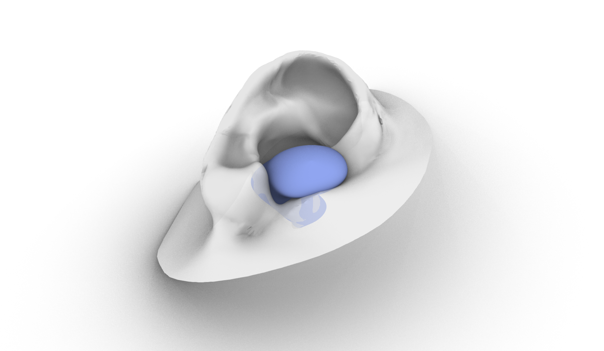

Design for Personalized Fit#
Categories: Lesson Created: February 24, 2023 12:14 PM Review: Ready for Review Tags: 3d scans, personalized
üìå Outlines: A short description of what you can expect in the upcoming section. üìë Explanation text: Written explanations with supporting images. üë©‚Äçüè´ Explanation videos: Explaining the course material in short lecture videos. üì∫ Tutorial videos: Follow-along tutorials. üí° Tips: Tips and tricks to make working in Rhino/Grasshopper easier. üñ±Ô∏è Exercises: Small practice questions. The solution is provided. üíª Assignments: Open-ended assignments, to practice further with the course materials.
Special thanks to Dr. Wolf Song and Dr. Toon Huysmans for developing part of the content in this lesson.
Introduction#
Personalized Design#

Personalized design is an innovative approach to creating unique and customized products that are tailored to meet individual needs ranging from functional requirements to aesthetics. There are three main types of personalized products:

Personalization in Identity: focuses on enhancing the perception of the product by giving the customer freedom of customization through unique form, texture, colour, print, smell, taste, sound, feel, etc.

Personalization in Capabilities: focuses on enhancing the functions of the product to increase performance through extra augmentations (electrical, mechanical, fluidic, and thermal components) to create added value to the product.

Personalization in Fit: focuses on the interaction between the product, consumer, and its environment. Characteristics of the product such as shape, size, mass, colour palette, and personalized interactions (e.g. comfort) are adjusted to meet the individual’s needs.
Personalization in Fit#
The following lesson will focus on Personalization in Fit. This design method relies on physical measurements of an object or body part to generate a custom fitted product to meet the users need. The Personalization in Fit can benefit the users by providing increased comfort and improved performance.
When developing a design for Personalized Fit in Rhino Grasshopper, the goal is to create a Rhino Surface that matches the geometry and dimensions of the body part/object. For more on information on Rhino Surfaces, please refer to Lesson 4 (Reference here). Once the Rhino Surface has been created, the surface can be modified depending on the needs of the user e.g. applying a data-driven algorithmic pattern on the surface to reduce pressure applied on the body. There are various approaches to developing a personalized fit using Rhino Grasshopper depending on the body part and the data input method used.
Collecting Anthropomorphic Data#
Overview of Collection Methods#
To begin designing a product personalized for fit, we first need to collect anthropomorphic data (data of the human body geometry) before we create the Grasshopper script to generate the Rhino geometry. Depending on the requirements of the design, there are various collection methods varying in accuracy and complexity. The decision on the collection method will also influence how the Grasshopper script will be set up as we will see in the following section.
The input methods we will discuss include:
Physical measurements
3D Scanning
Statistical Shape Modeling
3D scan database (DINED)
Physical Measurements#
Obtaining physical measurements is the simplest and quickest method to acquire data on human body parts, yet it might not be as accurate as other methods. To obtain physical measurements, the designer can use simple tools such as a caliper, or a custom rig to measure specific points along the body. You might already be familiar with some measurement rigs such as the foot measuring device to find your shoe size.

In the Master’s graduation project Development of a low-cost 3D foot scanner , graduation student Hoeksema, J. developed a rig to digitally measure specific points along a person’s foot as seen in the figure below.

3D Scanning#

Non-contact 3D scanning is the process of collecting data on a real world object through cameras, lasers, and other types of sensors. The outcome of this process is usually a 3D mesh model as seen in the figure below.

Depending on the accuracy of the 3D scanned used, the 3D mesh may require some post-processing to reduce the noise, artefacts, and missing data in the scanning process before it is ready for use inside of Grasshopper. The post-processing cleaning of the mesh can be done in a polygon modeling software such as Blender or Zbrush. In some cases, mesh correspondence can also be an option to improve the quality of the 3D scan. In mesh correspondence, a high quality 3D template is overlayed and deformed to match the geometry of the 3D scan as can be seen in the figure below. Mesh correspondence can be done using the software R3DS Wrap 3 .

Credits: Dr. Toon Huysmans
Statistical Shape Modeling#
Statistical Shape Modeling are used to describe a collection of similar 3D data in a simplified way. SSMs represent an average of the geometry of the 3D data including any variation. For example, if you have collected various 3D scanned data of ear geometry from a certain population, using SSM you could create an average 3D mesh model of your collected data. This approach can be useful when the goal of your design is for Personalized Fit of an individual, but Personalized Fit for a particular population. To explore the creation of SSM, refer to the software Paraview for more information.

Credits: Dr. Toon Huysmans
3D Scan Database (DINED)#
If your design project requires Personalization in Fit for a specific human population, online databases such as DINED are useful to quickly collect data and obtain quality 3D meshes for the human body. DINED is an anthropomorphic database with various data, including 3D data, of various human populations. With DINED, you are able to select from a variety of populations and measures, and download the 3D SSM mesh file as an STL to be used in Grasshopper.

Credits: Dr. Toon Huysmans
Additionally, there is a Grasshopper plugin for DINED developed at TU Delft - Industrial Design Engineering by Dr. Toon Huysmans. This plugin allows the user to directly select the population and import the 3D STL model directly from Grasshopper. More information on the DINED Grasshopper plugin can be found in the following resource: DINED Plugin
Generating Personalized Designs from Anthropomorphic Data#
Depending on your data collection method and the requirements of your design, you can use various methods to generate a Rhino Surface using Grasshopper. The first few methods presented to showcase how to generate a Rhino Surface using different input data and approaches. A Rhino Surface is often the starting point in your personalized design before adding further features. The final method showcases how a pre-existing design template can be customized using anthropomorphic data collected from users.
Generating a Surface from Physical Measurements#
In this scenario, the designer generates a surface from physical measurements taken of users’ anthropomorphic data, whether measured with simple tools like a caliper or a custom rig. For this, the designer creates a Grasshopper script with a template surface. The template surface is created from curves, from which the control points represent the locations at which the measurements are taken.
An example of this scenario can be seen in Development of a low-cost 3D foot scanner. In this graduation project, the student developed a custom contact 3D scanning rig to measure the feet of users. The measured location points are then inputted into a Grasshopper script that modifies the surface template to match the measured values.

https://repository.tudelft.nl/islandora/object/uuid%3A0ee880fb-7063-42cd-aa82-b67f7c84d1e9

https://repository.tudelft.nl/islandora/object/uuid%3A0ee880fb-7063-42cd-aa82-b67f7c84d1e9
Let’s consider how we can set up a Grasshopper script using a similar scenario to generate a surface of foot based on foot measurements. You can refer to the Grasshopper script Shoe Physical Measurements.gh to see the detailed implementation in Grasshopper. In our case, we do not have access to a custom measuring rig, but we can rely on simple tools such as a caliper or a ruler to obtain similar measurements around the foot. We can take the following steps to create a script for this purpose:
Decide on the key measurement locations around the foot that properly define the general geometry. You can refer to the paper * for an example of an approach to identify key dimensions of the hand.
* ](Design%20for%20Personalized%20Fit%204302b2ad49e44388a794c0f6d7218b53/Untitled.png)
Create a set of contour curves with defined control points based on the key measurement locations. The curves can be manually created in Rhino or generated based on a template 3D scan of an average foot. In our example, we used the “Contour” component to generate the contour curves and the original control points as the key measurement locations. The key measurement locations should be adapted in the script according to your findings from step 1.
Define how the physical measurements will affect the location of the control points of the curves. Depending on the physical measurement taken, the distance between 2 or more control points is adjusted on the Grasshopper script based on these measurements. In this example, we show how we can adapt the bottom width of the shoe by adjusting the distance between two sets of control points.

Reconstruct the contour curve data tree and generate a surface loft based on the changes.

Adaptable Parametric Model to 3D Scan#
- To do: clean up script to make it more readable
To do: clean up script to make it more readable
In this scenario, the designer creates a product in Rhino or in Grasshopper to meet the desired function and form. This design serves as a template that can be customized to meet the size requirements of different users. In the template, certain product variables are parametrized to adjust based on the size requirements. Using Rhino Grasshopper, a script can be written to automatically extract data from a 3D scan that can be used to adjust the product parameters automatically.
An example of this method is the Design of customizable sunglasses based on additive manufacturing techniques. In this project, the student created a main design template of sunglasses with some features of the sunglasses being parametrized e.g. parametric temple (side piece) length and bridge (nose piece) length to accommodate various head and nose sizes. By collecting and analyzing data from user’s 3D scans, the parametric glasses are automatically adjusted to fit the user’s size requirements. A visual example of these results can be seen in the figure below.

https://repository.tudelft.nl/islandora/object/uuid%3A33a65390-41bb-4fb2-b2ac-7166fca7e87a
To implement this approach in a Grasshopper script, let’s consider the example mentioned above. Here we will show the workflow of a script that adjusts the frame of the glasses based on certain landmarks from a 3D scan. Some advanced 3D scanners come with built-in functionality to automatically detect certain landmarks based on body parts, which can be used in such design cases. In our example script ParametricSunglasses.gh, the user is prompted to manually select 2 landmarks from the desired 3D head scan to generate the parametric glasses: The top of the ear and the bridge of the nose.
The workflow for this script is as follows:
Design the geometry of your sunglasses in Grasshopper to allow for parametrization. In the example, the geometry of the frames consists of multiple simple curves to define the surfaces. The final surface model consists of a combination of surfaces from the “Pipe” and “Loft” components.
Define the relationship between the geometry and the landmarks from the 3D scan. In this case, one of the points of the curve defining the glasses’s temples sits on the ear landmark while the center point of the curve defining the bridge of the glasses sits on the nose landmark.
Make most parameters of the glasses’ frame relative to each other. Here you can manually tweak the different parameters of the glasses to ensure they resize proportionally when the landmark points are modified. For example, the radius of the lens can be manually tweaked to resize accordingly to the landmark positions.
Test the grasshopper script with multiple 3D scans and adjust your parameters accordingly.


Generating a Surface from 3D Scan (Mesh Slicing)#
Personalized Design From 3D Scan - Hand Splint Exercise.gh
In this scenario, the goal is to create a surface from a 3D scan of a body part with relatively simple geometry e.g. an arm or leg. Imagine that you would like to create a design for an arm brace using the 3D scan mesh of your user’s arm. We can approach this problem in Grasshopper with the following steps;
Create a series of planes across the arm

Find the intersection curve between the plane and the mesh

Create a loft between the curves to generate a surface

For further instructions on how to set up the Grasshopper script, refer to Lesson 4 - Surfaces
Additionally, it is important to mention that this method is not only intended for 3d scan anthropomorphic data. In fact, we can apply this method to any 3D scan mesh data we collect. One common use case as a designer is to develop rapid physical prototypes out of a mouldable materials such as clay using the body part of the user as a guide. We can then 3D scan the prototype and generate the surface in Rhino Grasshopper with this approach. The figure below showcases how this method can be applied to create an ergonomic mouse going from a clay prototype to 3D scan mesh to Rhino surface.


Generating a Surface from Complex 3D Scan (Mesh Cavity + Slicing)#
Generating a Mesh from Ear Canal Cavity (Simple).gh.gh).gh).gh)
For complex 3D scans, such as that of the ear, it can be more complicated to generate a surface geometry. Imagine that we would like to create an ear bud that perfectly matches the inner cavity of the ear. If we try to apply the Mesh Slicing method to an ear 3D scan, we soon run into issues with multiple curve slices on the same planes and other complications.
For this case, one approach can be to first isolate the geometry of the ear cavity and then generate the surface using mesh slicing. Take a look at the example Grasshopper script to see the full workflow Generating a Mesh from Ear Canal Cavity (Simple).gh.gh).gh). We can use the following steps to generate the surface of the ear cavity:
Generate a “Cutting” mesh to isolate the cavity of the ear. In this case, a sphere mesh was created. As the ear 3D scans used in this example contained a naked edge on the ear cavity, the center point of this naked edge was used as the center position of the sphere.

Using a “Mesh Difference” component, we then obtain the isolated mesh of the ear cavity.

Now we can use the mesh slicing method making sure to close any open curves created and removing any additional undesired curves. This step requires manual tweaking to ensure the contour curves correct to generate the surface loft.

Generate the surface loft and troubleshoot the loft curves as learned in Lesson 4 - Surfaces to generate a clean surface geometry.


This solution is only one of many to obtain the inner cavity of the ear as a surface. For a different type of a approach, refer to the tutorial Generative Form Finding with Kangaroo Physics to learn how you can use Kangaroo physics to generate a similar geometry of the inner cavity.
Relevant Projects#
Drafts
Draft 1 (archive)#
Preliminary Outline (To be removed)#
Introduction into personalized design
Link to examples from graduation projects
Introduction into the example
Generating a forearm splint with custom pattern from a 3d scan
Creating the surface
Import 3d scan mesh into Rhino
First open Grasshopper and then import the 3d scan mesh into that instance of Rhino
Create boundary box
Select the direction to divide up the model
Create multiple planes along the model direction
Find intersection curve between 3d scan mesh and the planes
Rebuild the curves
Loft a surface over the curves
Creating the pattern
Create a pattern
Pattern can be designed around certain data (heat map, pressure map) but that is covered in another section - link to section
Morphing Pattern on Surface
Set up the UV mapping
Morph the pattern onto the surface
Optimizing and preparation for 3d printing
Covered in another section - link to section
üìë A.1 Introduction#
Personalized Design#

Personalized design is an innovative approach to creating unique and customized products that are tailored to meet individual needs ranging from functional requirements to aesthetics. There are three main types of personalized products:
Personalization in Identity: focuses on enhancing the perception of the product by giving the customer freedom of customization through unique form, texture, colour, print, smell, taste, sound, feel, etc.

Personalization in Capabilities: focuses on enhancing the functions of the product to increase performance through extra augmentations (electrical, mechanical, fluidic, and thermal components) to create added value to the product.

https://www.pinterest.cl/pin/491103534351777759/
Personalization in Fit: focuses on the interaction between the product, consumer, and its environment. Characteristics of the product such as shape, size, mass, colour palette, and personalized interactions (e.g. comfort) are adjusted to meet the individual’s needs.

Personalization in Fit#
The following lesson will focus on Personalization in Fit. This design method relies on 3D scanning technology to capture precise measurements of the object or body part to be designed for and then uses algorithms to create custom patterns and shapes. The benefits of Personalization in Fit are numerous, including increased comfort, improved performance, and reduced waste. In this section, we will introduce you to the exciting world of personalized design and show you how to design your own personalized product using 3D scanning data with Rhino and Grasshopper.
üìë A.2 Exercise - Designing a Personalized Hand Splint with Custom Pattern#
In this section, you will learn how to design a personalized hand splint using 3D scanning data of an arm with Rhino and Grasshopper. The exercise files can be found at the beginning of this lesson to help you follow along during the lesson.

Source: https://nl.pinterest.com/pin/377106168771535985/
First, we begin by dissecting the problem/system into manageable parts in a step called Decomposition. The divided parts are functional elements that collectively comprise the whole system/problem. In this exercise, we will focus on the Splint component.

The design method involves using algorithms to create a Rhino surface from the 3D scanned mesh, creating custom patterns and shapes to be applied to the splint, and morphing the custom pattern onto the Rhino surface. Let’s get started!
Design Workflow#

Show overview of the algorithmic process - can be applied to other geometry as well
Here include illustration showing the process with the 3d files as well
üìëA.3 Creating a Surface from a 3D Scan Mesh#
The first step in the design method is to create a surface from the imported 3D scan mesh. To learn more on this procedure, refer to Lesson 4 - Surfaces.
üìëA.4 Generating Custom Pattern#
In this section, we will show you how to create a custom pattern to apply on the surface of the splint. Custom patterns can be generated for aesthetics or functional needs. Custom patterns for aesthetic needs provide visually interesting designs for the customer. On the other hand, custom patterns for functional needs can be used to increase comfort in the personalized design by adjusting the pattern-based physiological measured data such as heat distribution or pressure on the body. Designing custom patterns for functional needs is covered in [Insert Lesson on Data-driven design]. In this lesson, we will show you how to design a custom pattern for aesthetic needs.
Approach for Generating Custom Pattern#
In the figure below, the general approach for generating a custom pattern for aesthetics is shown. Here, we will utilize a commonly used pattern in computation design called “voronoi”.


Voronoi Pattern#

A Voronoi pattern is a type of pattern that is created by dividing a space into cells based on the proximity of points. In the context of design, Voronoi patterns are often used to create organic and intricate designs that are visually interesting. In the process of creating a Voronoi pattern for a personalized design project, the surface is divided into a network of cells based on the proximity of points on the surface. The shape and size of the cells can be adjusted to create different effects based on the needs of the personalized design.
Defining the Boundary Curve#
The first step is to generate the boundary curve where the custom pattern will be created. In this example, a rectangle is created to match the general dimensions of the arm scan. It is important to note that the pattern will deform when it is morph to the 3D surface, therefore, the general proportions of the initial boundary curve should match with the proportions of the morphing surface to avoid unwanted results.

Populating Random Points#
Before generating the voronoi pattern, a distribution of points on the surface is needed to create the network of cells. As we do not want the points to be located on the edge of the boundary curve, we first offset the boundary curve inward using the “Offset Curve” component. The offset curve can then be used as the “Region” input in the “Populate 2D” component. Here you can choose the number of points to be generated with the “Count” input, which will created more cells in the voronoi pattern with a higher number of points.

Creating the Voronoi Pattern#
The generated points are then connected as the points in the “Voronoi” components. Based on the proximity of the generated points, the voronoi pattern generates a cell at each of the points’ location. To ensure the pattern extends the all the way to edge of the boundary curve, we connect the original boundary curve, not the offset curve, as the boundary of the voronoi pattern.

Offsetting the Pattern Curve#
To give the voronoi pattern width to be able to generate a surface in the next step, we use the “Offset Curve” component once more. In this step, we must be careful of the constraints in the “Distance” input. Here we choose a low negative value to avoid intersecting curves. Feel free to experiment with setting different “Distance” values and see what the available range is.

Generating Boundary Surface and Extruding#

üìëA.5 Applying Pattern on Surface#
Morphing Approach#

Setting up UV Mapping#
üìëA.6 Beyond This Lesson#

üìëA.7 Further Reading#
Data driven - another lesson
Preparing for 3D Printing - another lesson
üìëA.8 Example Projects#
Here include links to other projects that are already including
Draft 2 (archive)#
Introduction#
Personalized Design#
Personalized design is an innovative approach to creating unique and customized products that are tailored to meet individual needs ranging from functional requirements to aesthetics. There are three main types of personalized products:
Personalization in Identity: focuses on enhancing the perception of the product by giving the customer freedom of customization through unique form, texture, colour, print, smell, taste, sound, feel, etc.
Personalization in Capabilities: focuses on enhancing the functions of the product to increase performance through extra augmentations (electrical, mechanical, fluidic, and thermal components) to create added value to the product.
https://www.pinterest.cl/pin/491103534351777759/
Personalization in Fit: focuses on the interaction between the product, consumer, and its environment. Characteristics of the product such as shape, size, mass, colour palette, and personalized interactions (e.g. comfort) are adjusted to meet the individual’s needs.
Personalization in Fit#
The following lesson will focus on Personalization in Fit. This design method relies on 3D scanning technology to capture precise measurements of the object or body part to be designed for and then uses algorithms to create custom patterns and shapes. The benefits of Personalization in Fit are numerous, including increased comfort, improved performance, and reduced waste. In this section, we will introduce you to the exciting world of personalized design and show you how to design your own personalized product using 3D scanning data with Rhino and Grasshopper.
Selecting your Input Method#
There are various methods to create an input for your personalized design
Using a 3D scanner to create a 3D mesh
This can require to clean up the mesh to remove noise and unwanted objects
How can we do this in Grasshopper? I know we can do it in Blender or Meshmixer
We can use Smooth in Rhino or Smooth Mesh in Grasshopper to smoothed out the scan as well
Creating physical prototype based on a personalization and 3d scanning it
DINED database
how to access the data and what is available?
DINED plugin
Statistical Shape Modeling
Take multiple 3D scan samples and create statistically average models (or models in a certain percentile you want)
Take manual measurements of specific body locations or measurements with a machine
Translating Body Data into Grasshopper Surface#
Outline#
There are many methods possible when creating personalized products for fit
Turning a 3D scan mesh into a surface (covered in Lesson 4 - Surfaces)
Create intersecting planes
Find intersecting contour curves
Loft the curves to create surface
Example 1, but what happens with more complex scenarios
Creating a surface from the fingers of the hands
Creating a surface of the ear canal with its complex curves and structures
Example 1, but instead creating physical prototype then 3d scanning and creating surface to add further design elements (mouse example)
Having a fixed product design and then adapted to the 3d scan (personalized glasses graduation project)
Taking measurements to create custom shape (low-cost foot scanner project)
Taking for example the creation of a custom shoe
Take various measurements at fixed locations around the object
Input these measurements into the Grasshopper script
The measurements translate to the distance between certain points of the foot
Curves are created around these points to form the contours
A loft is created between these curves to form the foot shape
Turning a 3D scan mesh into a surface (covered in Lesson 4 - Surfaces)#
The first step in the design method is to create a surface from the imported 3D scan mesh. To learn more on this procedure, refer to Lesson 4 section creating surface
Input 3D Scan Mesh#

Find Bounding Box#

Create Slicing Planes#

Find Intersection Curves#


Curve needs to be rebuilt using “Rebuild Curve” component afterwards
Create Loft from Curves#

Make sure Loft is Open
To create a loft from curves in Grasshopper, first find the intersection curves between the 3D scan mesh and the planes that were created along the model direction. Then, rebuild the curves using the “Rebuild Curve” component. Finally, create a loft from the curves using the “Loft” component, making sure that the loft is open.
Fixed Product Personalized Design#
Refer to personalized glasses graduation project
Poster_VAN-WIJNGAARDEN_1528904.pdf.pdf


Taking Measurements to create custom shape#
Refer to the following graduation project: https://repository.tudelft.nl/islandora/object/uuid%3A0ee880fb-7063-42cd-aa82-b67f7c84d1e9?collection=education


Personalized Product Development - beyond the surface#
Outline#
After creating a surface in Grasshopper based on a body scan, a personalized product can now be created
Personalization for aesthetics
The most basic computational method
Adding patterns to the design that serve simply for aesthetic value
Example with the arm cast
Personalization based on data (see Topic B - Data Driven Personalized Design)
Collect ergonomic data around the body part for used in the design
Examples of this include:
heat map data of the arm to improve heat comfort
Pressure data to create lattice structures for foot or seat comfort
Draft 3 (archive)#
Generating Personalized Designs from Anthropomorphic Data#
Depending on your data collection method and the requirements of your design, there are various methods you can take to generate a Rhino Surface using Grasshopper. The first few methods presented showcase how to generate a Rhino Surface using different input data and approaches. A Rhino Surface is often the starting point in your personalized design before adding further features. The final method showcases how a pre-existing design template can be customized using anthropomorphic data collected from users.
Generating a Surface from Physical Measurements#
In this scenario, the designer generates a surface from physical measurements taken of users anthropomorphic data whether it is measured with simple tools like a caliper or a custom rig. For this, the designer creates a Grasshopper script with a template surface. The template surface is created from curves, from which the control points represent the locations at which the measurements are taken.
An example of this scenario can be seen in Development of a low-cost 3D foot scanner . In this graduation project, the student developed a custom contact 3D scanning rig to measure the feet of users. The measured location points are then inputted into a Grasshopper script that modifies the surface template to match the measured values.
Let’s consider how we can set up a Grasshopper script using a similar scenario to generate a surface of foot based on foot measurements. in our case, we do not have access to a custom measuring rig, but we will rely on simple tools such as a caliper or ruler. We can take the following steps to create our script:
Decide on the key measurement locations
Create the surface template using curves with defined control points
Can be done in Rhino or Grasshopper
Use a 3D scan as a guide if needed
Define how the physical measurements will affect the location of the points
Adjust the distance between points based on the physical measurements


Generating a Surface from 3D Scan (Mesh Slicing)#
Personalized Design From 3D Scan - Hand Splint Exercise.gh
In this scenario, the goal is to create a surface from a 3D scan of a body part with relatively simple geometry e.g. an arm or leg. Imagine that you would like to create a design for an arm brace using the 3D scan mesh of your user’s arm. We can approach this problem in Grasshopper with the following steps;
Create a series of planes across the arm
Find the intersection curve between the plane and the mesh
Create a loft between the curves to generate a surface
For further instructions on how to set up the Grasshopper script, refer to Lesson 4 - Surfaces
Additionally, it is important to mention that this method is not only intended for 3d scan anthropomorphic data. In fact, we can apply this method to any 3D scan mesh data we collect. One common use case as a designer is to develop rapid physical prototypes out of a mouldable materials such as clay using the body part of the user as a guide. We can then 3D scan the prototype and generate the surface in Rhino Grasshopper with this approach. The figure below showcases how this method can be applied to create an ergonomic mouse going from a clay prototype to 3D scan mesh to Rhino surface.
Generating a Mesh from a Cavity using a 3D Scan (Physics Simulation)#
Generating a Mesh from Ear Canal Cavity (Kangaroo Physics)))
For more complicated 3D scan geometry, the approached mentioned above might not be sufficient to generate good results. In this cases, a more creative approach is necessary. Let’s take for example, the geometry of an ear canal. in this scenario, we would like to create an earbud that is personalized for the user’s 3D scan and perfectly fits the cavity of the ear canal.
One approach we can take is to use Grasshoppers Kangaroo physics simulation to generate the geometry of the earbud. It is important to note that the following approach is for advanced users, only works on Windows PC for now, and requires the following plugins:
Weaverbird
Lunchbox
Pufferfish
Dendro
If you are new to Grasshopper Kangaroo physics simulation, it is recommended to first read the lesson on (Insert link to Form Finding with Kangaroo Physics). This approach is as follows:
Simplify the geometry of the ear to speed up the simulation


Prepare a distribution of small spheres to collide with the ear canal and set up the simulation with Kangaroo

Run the simulation allowing the spheres to collide with the ear and fill up the ear canal cavity


Create a volume from the collection of spheres and convert into mesh


For more details on this implementation, refer to the example file provided: Generating a Mesh from Ear Canal Cavity (Kangaroo Physics))). In this approach, we can adjust the size and shape of the final mesh by adjusting the simulation parameters. For example, if we want the earbud to cover a larger area of the ear, then we can add more balls to the simulation to increase the total area covered by the balls. Experiment with the example file and test it out for yourself!
Deforming Parametric Model to 3D Scan#
In this scenario, the designer creates a product in Rhino or in Grasshopper to meet the desired function and form. This design serves as a template that can be customized to meet the size requirements of different users. In the template, certain product variables are parametrized to adjust based on the size requirements. Using Rhino Grasshopper, a script can be written to automatically extract data from a 3D scan that can be used to adjust the product parameters automatically.
A great example of this method is the Design of customizable sunglasses based on additive manufacturing techniques . In this project, the student created a main design template of sunglasses with some features of the sunglasses being parametrized e.g. parametric temple (side piece) length and bridge (nose piece) length to accommodate various head and nose sizes. By collecting and analyzing data from user’s 3D scans, the parametric glasses are automatically adjusted to fit the user’s size requirements. A visual example of these results can be seen in the figure below.

To implement this approach in a Grasshopper script, let’s consider the above mentioned example. Here we will create a script that adjust the length of the temple of the glasses based on the mean head circumference of the 3D scan with the following steps:
Simple Method#
Slicing the 3D mesh to create contour curves (z-direction)
Measuring the average circumference of the contour curves
Adjusting the Temple Length parameter based on the average circumference
Advanced Method#
Creating landmark location of the ear and nose bridge (manual or automatic)
Measuring distance between the two landmark points
Adjusting the Temple Length of glasses based on this length
Consulted with Anne, we will do the following
Discuss how some advanced 3d scanner software can create landmarks of features (ears, nose)
If we do not have access to that software, then we have a manual step to select a point on the ear and on the nose as the starting point
Base on this distance, the size of the glasses will adjust accordingly
Modifying the Personalized Product#
Once we have a basic Rhino geometry to work with, we can start modifying the geometry to add value to our user. We can add value to the user in two ways: aesthetics and functionality.
In aesthetics, we can add value by detailing to the surface to make the product more appealing. One simple way to achieve this is to add patterns to surfaces to add unique aesthetic. More detailing on Morphing a Pattern to a Surface can be found in the Mini-Lesson Morphing a Pattern to a Surface.

In functionality, we can add value by making the product more comfortable to wear or to support certain areas of the bodies. For this, we will need to collect more data on the user’s use case, such as how heat is distributed throughout the body or how the pressure is distributed on the body when wearing the product. This is further discussed in the next lesson Data-Driven Personalized Design.